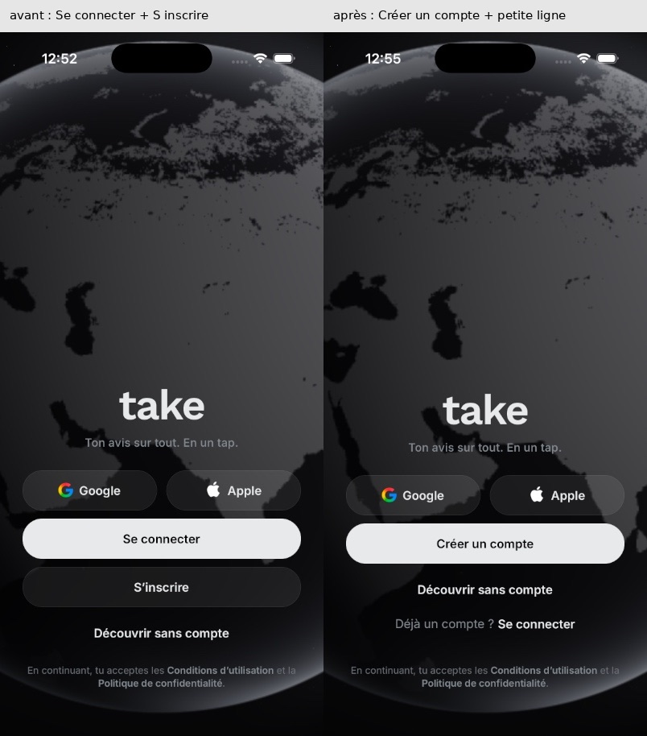
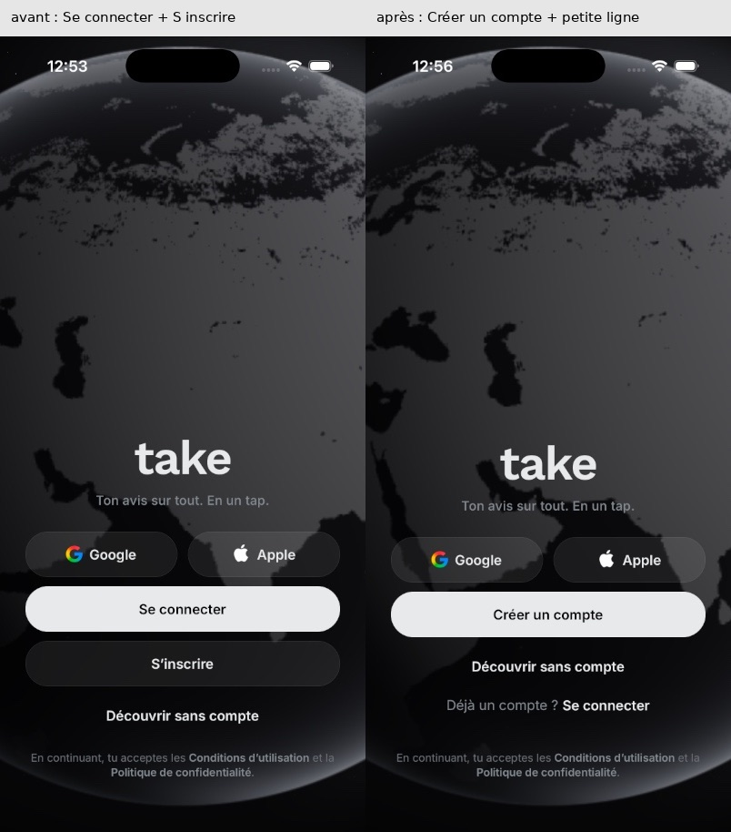
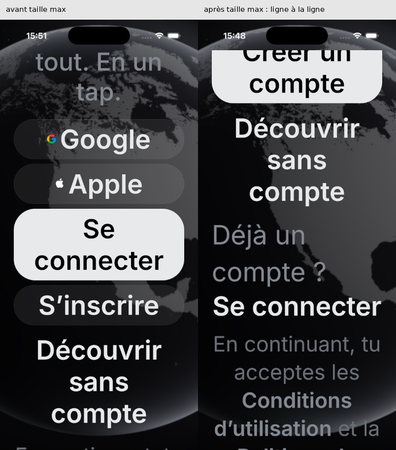
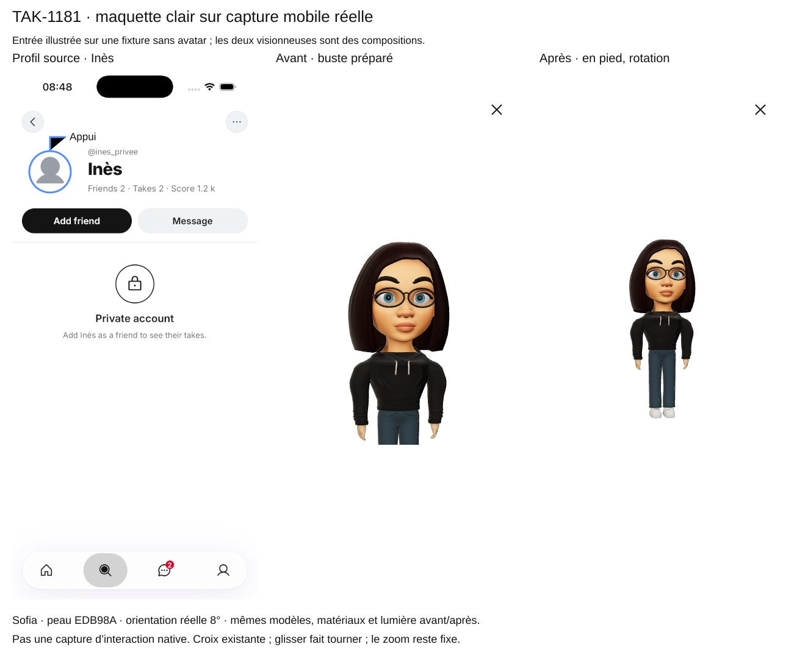
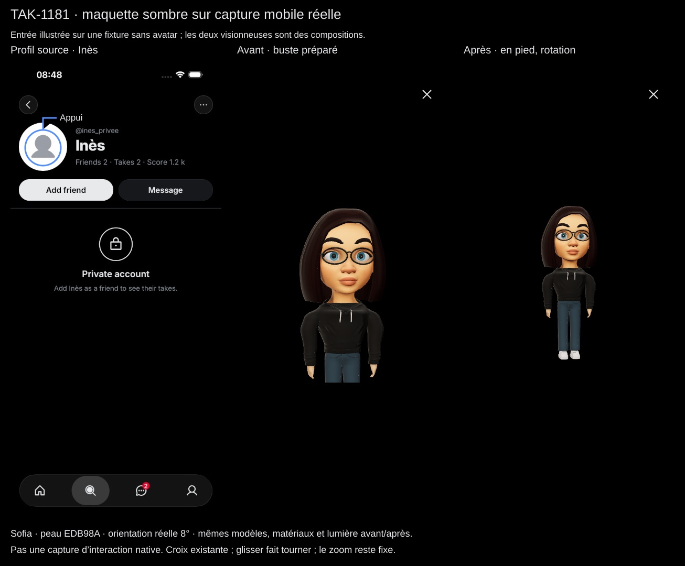

Build 197 : 4 choses à trancher
Ce sont tes décisions de DA et de staging. Tout le reste avance sans toi, et je te demanderai ton feu vert pour le build à part.
1L'accueil sans compte
Avant, il y avait deux gros boutons au même niveau, « Se connecter » et « S'inscrire ». Après, un seul gros bouton, « Créer un compte », et « Déjà un compte ? Se connecter » sur une petite ligne en dessous. C'est la loi de Hick : un seul choix évident pour quelqu'un qui découvre l'app, comme sur X.



Ma reco : oui. Un nouveau venu voit tout de suite quoi faire, et quelqu'un qui a déjà un compte garde son lien.
PR #4829
2Voir l'avatar en entier, comme sur Insta
Un appui sur l'avatar d'un profil ouvre l'avatar en pied, et tu le fais tourner en glissant. Avant, on ne voyait que le buste. C'est derrière un réglage serveur éteint : rien ne change dans le 197 tant que tu ne dis pas de l'allumer.


Un relecteur note qu'en pied, le personnage ne prend qu'environ un tiers de la hauteur de la visionneuse, avec beaucoup de vide autour.
Ma reco : on le fusionne éteint. Avant de l'allumer, je fais agrandir le personnage pour qu'il remplisse la visionneuse, sauf si tu le veux comme ça.
PR #4862
3Le champ de commentaire aussi arrondi que celui des messages
Un testeur sur TestFlight a demandé que le champ pour écrire un commentaire sous un Take ait les mêmes bords tout ronds que le champ des messages privés. Aujourd'hui, ses coins sont arrondis à 22 points, comme prévu dans la maquette. C'est l'agent de Jordan qui a fait la PR, et elle ne contient pas de capture.
Ma reco : oui, pour que les deux champs se ressemblent. C'est ta décision ou celle de Jordan. Si tu veux la voir avant, je fais prendre la capture en clair et en sombre.
PR #4887
4Allumer « relire son vote sur la base principale », sur staging seulement
Le code est déjà dans le 197, éteint. Une fois allumé, pendant 30 secondes après ton vote, tes lectures viennent de la base principale au lieu de la copie qui peut avoir un peu de retard. Du coup, un vote ou un passage en anonyme ne peut plus revenir en arrière sous tes yeux. Pour le mesurer, il faut redéployer l'API de staging avec ce réglage allumé, comme on l'a fait pour le 196. La production reste éteinte.
Ma reco : oui, le temps de mesurer ce que ça coûte (p50 et p95) sur staging. Si c'est négligeable, on en reparle pour la production.
PR #4869
Réponds-moi simplement, par exemple : « 1 oui, 2 oui mais plus grand, 3 oui, 4 go ».